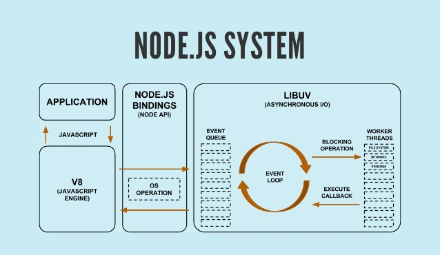
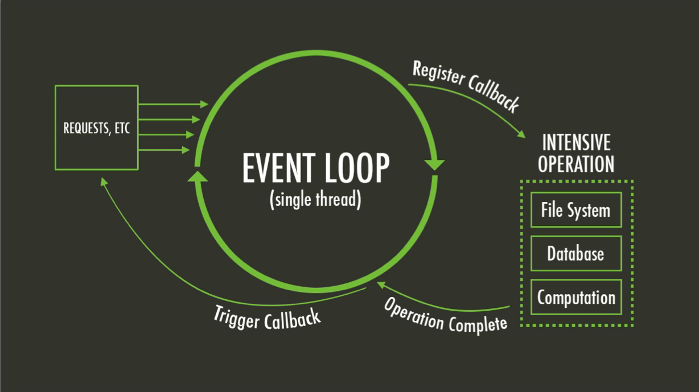

About Node.js
Node.js interprets the JavaScript in server side and uses V8, from Google, and libuv to manage processor, memory, events, and more. It basically an API accessible via JavaScript to V8 functions in C++ and was created in 2009 using the V8 engine.
Node.js System
V8 engine
This engine is a JavaScript interpreter, like a virtual machine developed in C++ by Google and it is currently being used on Chrome and it is also open-source. V8 basically compile the JavaScript code to the native machine code and them execute it. For JavaScript it was a huge thing because it brought the velocity of compiled code for the js.
Single Thread
The default of node.js is to work with a single thread, being possible to create more, reducing the memory and processor usage. For example, in a multi-thread environment for each user connected a new process/thread is created. Node.js handle everything in one thread and when no work is in process its sleep.
Event Loop
Event loop is the responsible to handle everything in one thread for node.js. It is an infinity queue which receives all events sent from node.js like the HTTP requests. When the process is asynchronous the event loop takes from the queue, execute it and after its finishes, executes the trigger for the callback, going back to the queue to be executed. So the process doesn’t get stuck in the event loop while waiting to finishes.
Node.js - Event Loop
More information
Any function in node.js is asynchronous by default. Because of that we will always need a function that will be executed after the process is finished. This function is the callback function.
Node.js is also event driven which simplifies the asynchronous programming. An event can be dispatched when a task is done and a listener is responsible to catch those events.